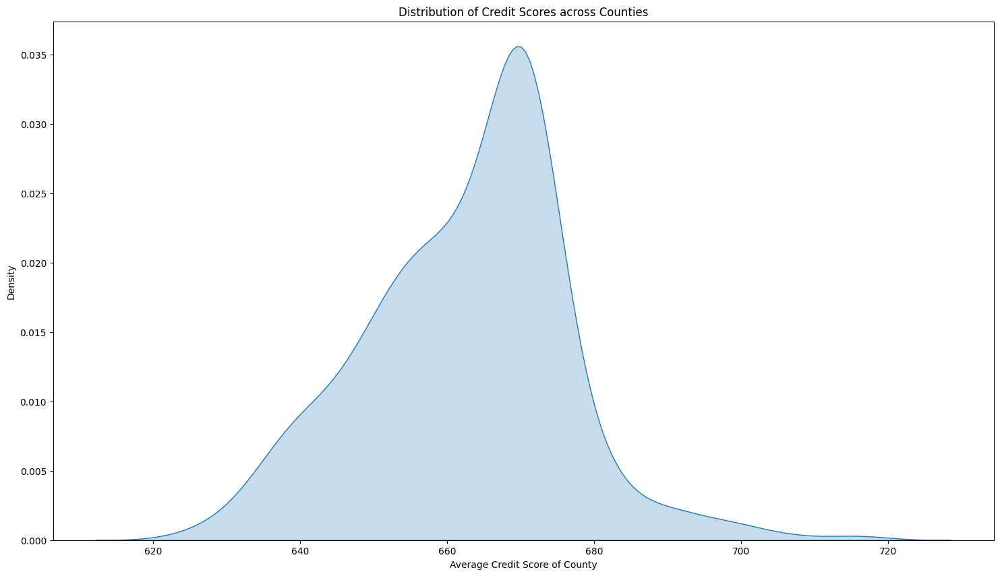
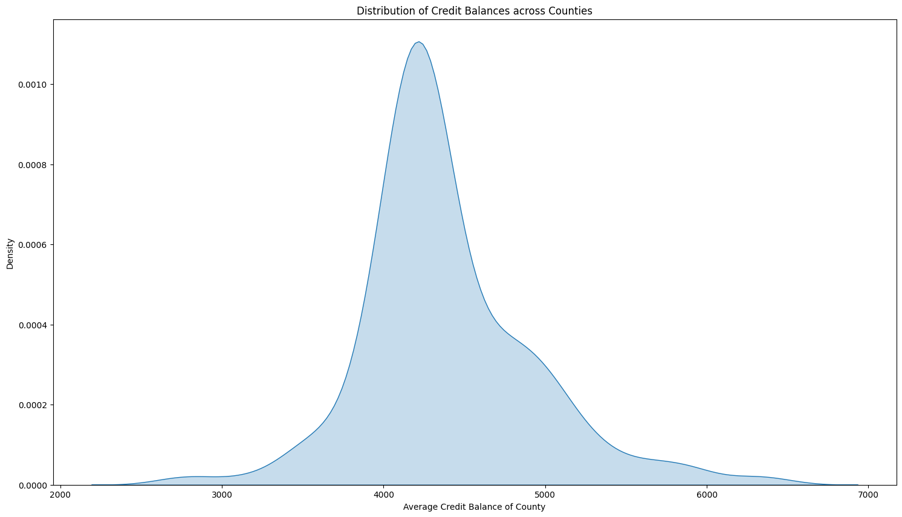
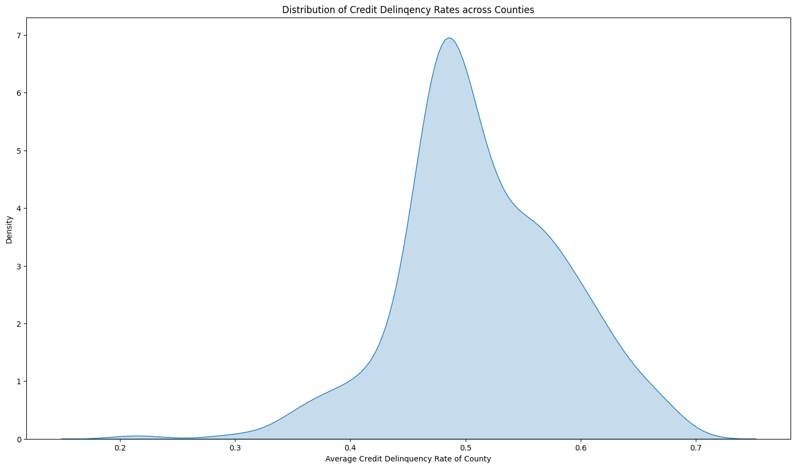
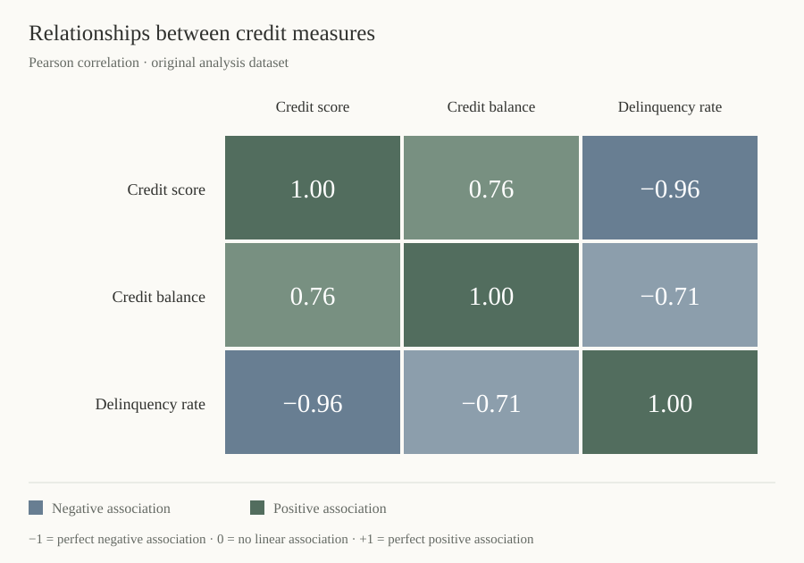
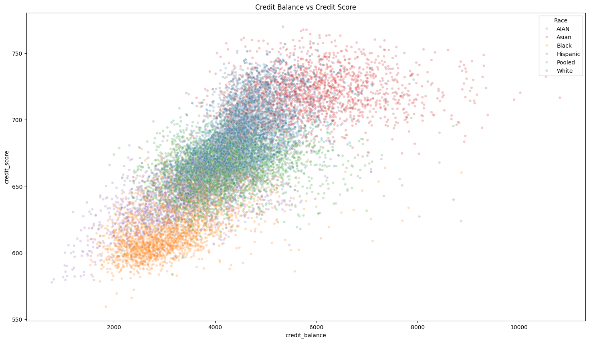
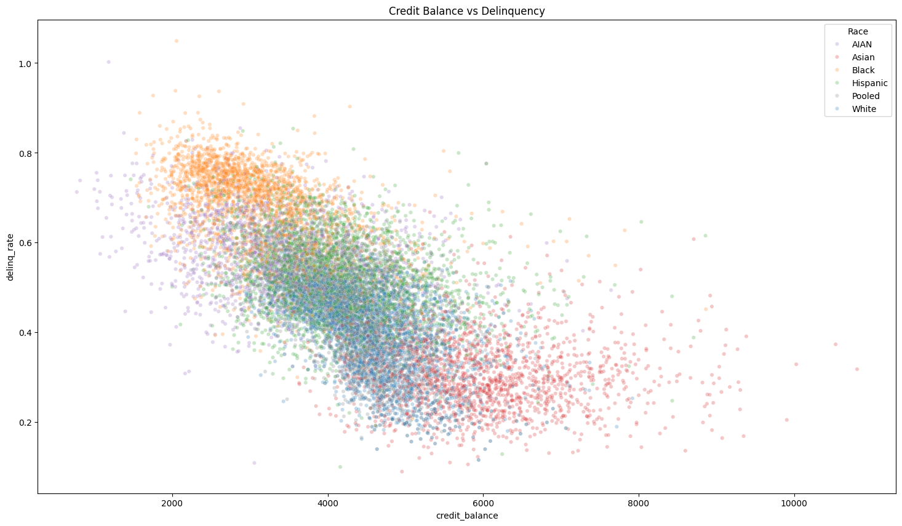
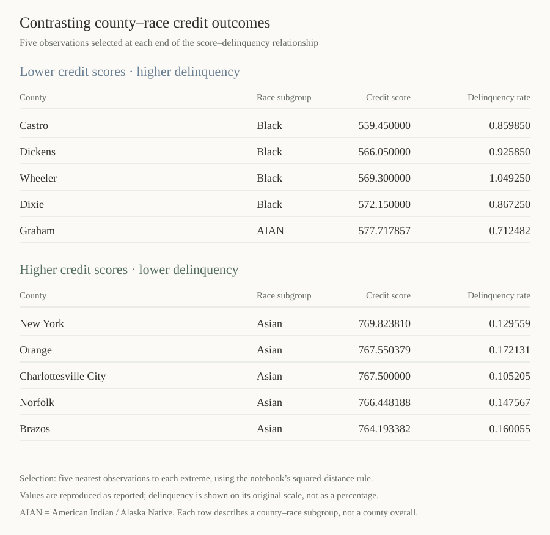
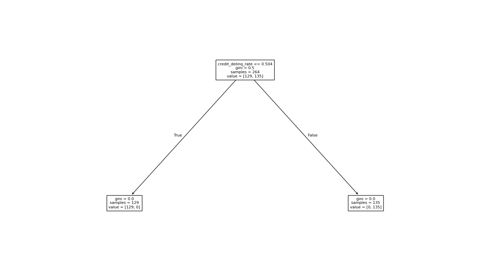
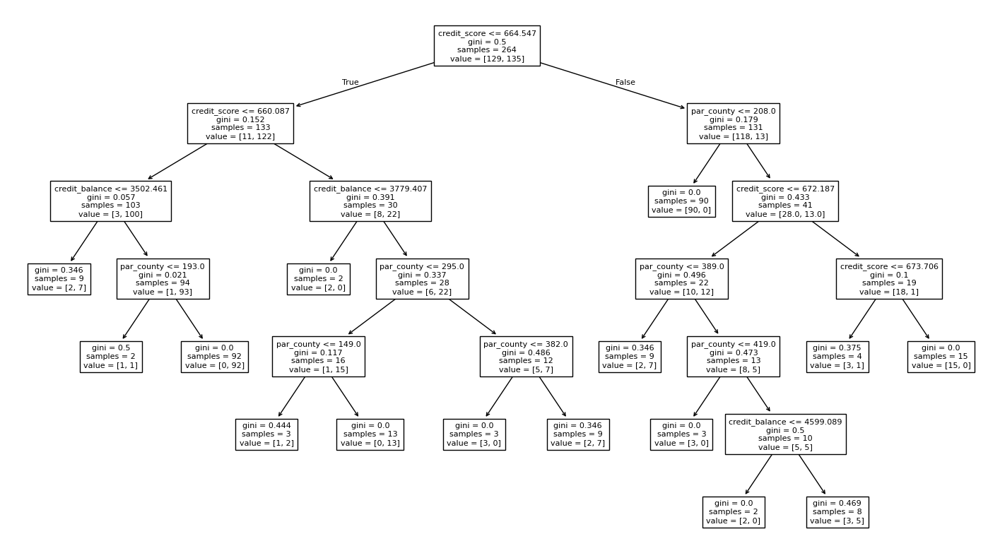

Context and motivation
This project, created with Peter Koumpikov, explores trends in credit scores, credit card balances, and 90-day delinquency rates across the United States. As Informatics and Economics students, we were interested in relationships that could inform policy, regulation, and financial inclusion.
Peter focused on preprocessing in pandas, statistical summaries, and visualization with matplotlib and seaborn. I focused on association analysis and predictive modeling. We contributed equally to the project and wrote the original report together.
Data preparation
We combined three Opportunity Insights datasets describing credit scores, credit card balances, and 90-day delinquency rates in 2020. Each source included parent state, parent county, county name, child race, and parent income percentile alongside the financial measure of interest.
We averaged the relevant features across counties, joined the datasets, and renamed the financial columns for readability. Parent income percentile was dropped from the exploratory analysis. For the association analysis, we also grouped by race, producing county-race subgroups rather than individual-level observations. This distinction matters when interpreting the figures: a point represents an aggregate subgroup, not a person or an entire county.
Distributions
We compared means, medians, ranges, and interquartile ranges to understand the spread of each variable. Credit scores had a relatively tight interquartile range. Credit balances and delinquency rates varied more substantially across counties. The mean credit balance exceeded the median, suggesting a right-skewed distribution. These summaries describe variation in the data; they do not establish that geography has no effect on access to credit.



Association analysis
We calculated a correlation matrix and visualized the three pairwise relationships among credit score, credit balance, and delinquency rate. Credit score and delinquency showed the strongest negative association. Credit balance was positively associated with credit score and negatively associated with delinquency.

Coloring each observation by race added context to these relationships. In the scatter plots, observations labeled Black appeared more frequently in regions with higher delinquency and lower credit scores, while observations labeled Asian appeared more frequently in regions with lower delinquency and higher credit scores. These aggregate patterns motivate further study of structural disparities; they do not establish causal explanations or describe every individual within a group.



We also examined subgroups at the extremes of the credit score–delinquency relationship. These observations illustrate the range of outcomes in the data and provide starting points for closer investigation, rather than a general ranking of counties.

Predictive modeling
We constructed a decision tree classifier to distinguish high from low delinquency using a median split. The initial model included average credit score, credit card balance, delinquency rate, and county identifier. Including delinquency rate introduced target leakage: the target label was derived directly from that same variable. This tree illustrates how classification works, but its performance does not demonstrate useful prediction.

For the second model, I removed raw delinquency rate and retained credit score, credit balance, and county identifier. The reported evaluation accuracy declined to 92%, but the task became more meaningful because the model had to infer delinquency class from other features. Credit score and credit balance featured prominently in the tree, reinforcing the relationships observed in the exploratory analysis.

Findings and limitations
The clearest finding was the strong negative relationship between credit score and delinquency. Grouping by both county and race revealed patterns that county-wide averages can conceal. Together, the statistical summaries, visualizations, and classifier show how complementary analytical methods can make a complex dataset more interpretable.
This is an exploratory analysis of aggregate data. Correlations do not establish causality, and the reported classifier accuracy does not by itself demonstrate performance in new counties or future years. Further work could examine how credit outcomes relate to health, quality of life, and other socioeconomic measures, with explicit attention to geographic validation and the limits of subgroup averages.